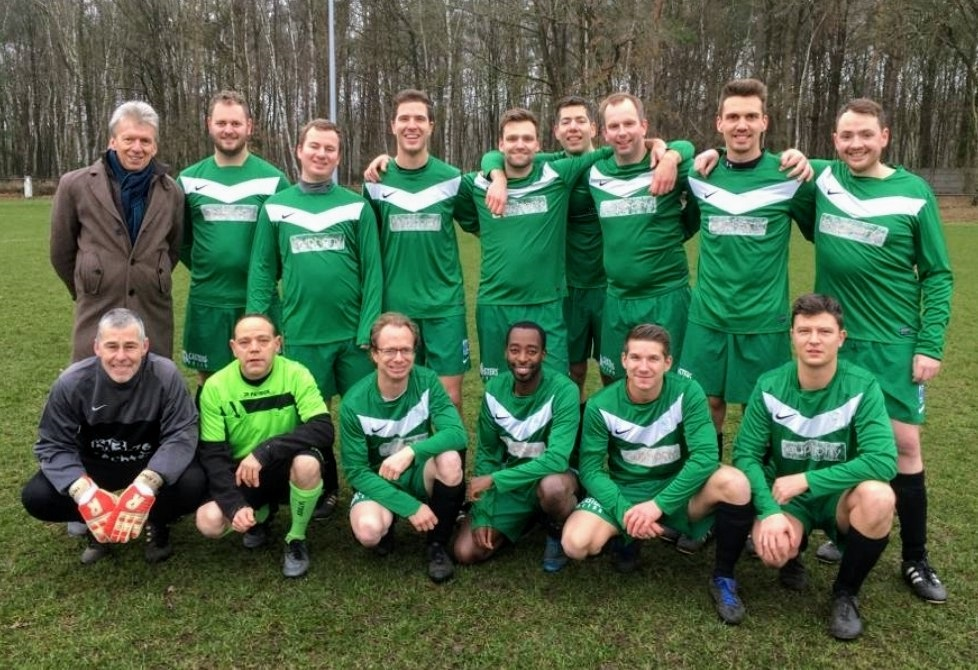

Over Sportvriend Hechtel
Wie zijn wij?
Sportvriend Hechtel is een warme voetbalclub waar sportiviteit, vriendschap en plezier centraal staan. In 2023 fuseerden Sportvriend 74 en KWB 76 tot één team, waarmee we een nieuwe geschiedenis begonnen met behoud van de tradities van beide clubs.
Met meer dan 100 leden bieden we sportieve ontspanning voor voetballers van alle leeftijden. Onze club is gelegen in het groene hart van Hechtel en beschikt over moderne faciliteiten die toegankelijk zijn voor iedereen.
Onze geschiedenis
In 1974 werd Sportvriend 74 opgericht door een groep enthousiaste voetballiefhebbers uit Hechtel. Twee jaar later, in 1976, ontstond ook KWB 76 als lokale voetbalclub voor de gemeenschap.
Beide clubs kenden hun eigen successen. In 2010 promoveerde Sportvriend 74 naar de hoogste regionale reeks, en in 2018 openden we ons vernieuwd clubhuis met moderne faciliteiten.
De mijlpaal in onze geschiedenis was de fusie van beide clubs in 2023, waarmee Sportvriend Hechtel ontstond zoals we die vandaag kennen.
Onze kernwaarden
- Teamspirit - Samen staan we sterker. We moedigen elkaar aan en vieren successen als een team.
- Respect - Voor medespelers, tegenstanders, scheidsrechters en supporters. Respect is de basis van onze club.
- Sportiviteit - Fair play staat voorop. Winnen is leuk, maar niet ten koste van alles.
- Toegankelijkheid - Iedereen is welkom bij onze club, ongeacht niveau of achtergrond.
Bestuur & staf
| Naam | Functie |
|---|---|
| Raf Peeters | Voorzitter |
| Bjorn Claes | Voorzitter |
| Jan Verbeek | Penningmeester |
| Thomas Mertens | Secretaris |
| Koen Vandenbossche | Hoofdtrainer |
| Bert Willems | Jeugdcoördinator |